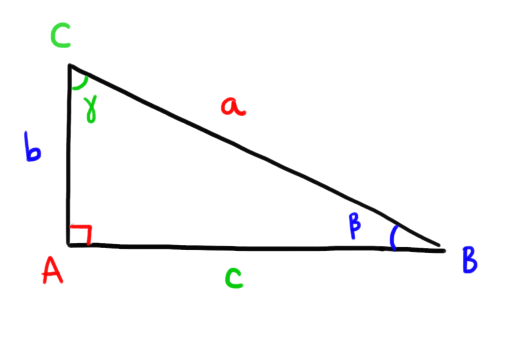

Goniometria
1
Seno, coseno, tangente:
definizione geometrica
Nella figura interattiva di seguito potete variare gli elementi del triangolo così come mostrato nel video.
Dato un triangolo rettangolo \(ABC\) possiamo considerare le seguenti funzioni trigonomeriche:
-
\[sin\left(\text{angolo}\right) = \dfrac{\text{cateto opposto}}{\text{ipotenusa}} \]
-
\[cos\left(\text{angolo}\right) = \dfrac{\text{cateto adiacente}}{\text{ipotenusa}} \]
-
\[sin\left(\text{angolo}\right) = \dfrac{\text{cateto opposto}}{\text{cateto adiacente}} \]
Consideriamo il triangolo in \(ABC\) in figura.

Seguendo le definizioni appena date si ha che ha che
-
\[
sin\left(\color{blue}{\beta}\color{black}{}\right) = \dfrac{\color{blue}{b}}{\color{red}{a}}
\quad
sin\left(\color{#009900}{\gamma}\color{black}{}\right) = \dfrac{\color{#009900}{c}}{\color{red}{a}}
\]
-
\[
cos\left(\color{blue}{\beta}\color{black}{}\right) = \dfrac{\color{#009900}{c}}{\color{red}{a}}
\quad
cos\left(\color{#009900}{\gamma}\color{black}{}\right) = \dfrac{\color{blue}{b}}{\color{red}{a}}
\]
-
\[
tan\left(\color{blue}{\beta}\color{black}{}\right) = \dfrac{\color{blue}{b}}{\color{#009900}{c}}
\quad
tan\left(\color{#009900}{\gamma}\color{black}{}\right) = \dfrac{\color{#009900}{c}}{\color{blue}{b}}
\]
2
Gradi v.s. Radianti
2.1
Definizioni di grado e radiante
Un grado è la \(360\)-esima parte di un angolo giro.
Data una qualsiasi circonferenza di raggio \(r\), un radiante è l'angolo che determina un arco di lunghezza uguale a quella del raggio.
2.2
Un angolo di riferimento: l'angolo giro
Un angolo giro in gradi misura \(360°\), mentre in radianti misura \(2\pi\).
2.3
Passare da gradi a radianti (e viceversa)
Il meccanismo che ci permette di passare da gradi a radianti e viceversa è si basa sulla seguente proporzione:
\[
\dfrac{\color{red}{\text{angolo in gradi}}}{\color{blue}{\text{angolo in radianti}}} = \dfrac{\color{red}{360°}}{\color{blue}{2\pi}}
\]
3
Visualizzazione delle funzioni trigonometriche
Si definisce circonferenza goniometrica una circonferenza centrata nell'origine ed avente raggio \(1\).
La circonferenza goniometrica è uno strumento di grande importanza per la goniometria, poiché ci permette di
-
visualizzare i valori del seno, coseno e tangente di un angolo.
-
estendere le nozioni di seno, coseno e tangenti ad angoli maggiori di \(90°\)
3.1
Visualizzazione del seno
Consideriamo un angolo \(\color{rgb(255, 127, 0)}{\alpha}\) avente come lati il semiasse positivo delle \(x\) ed il raggio \(OP\).
Proiettando il punto \(P\) perpendicolarmente sull'asse delle \(x\) otteniamo un triangolo rettangolo, \(OPH\).
Usiamo la definizione geometrica di seno che abbiamo visto nel primo paragrafo:
\[
sin\left(\color{rgb(255, 127, 0)}{\alpha}\color{black}{}\right) = \dfrac{\color{red}{PH}}{\color{gray}{OP}} =
\dfrac{\color{red}{PH}}{\color{gray}{1}} = \color{red}{PH}
\]
Abbiamo ottenuto che
\[
sin\left(\color{rgb(255, 127, 0)}{\alpha}\color{black}{}\right) = \color{red}{PH}
\]
ovvero che la misura del seno di \(\color{rgb(255, 127, 0)}{\alpha}\) coincide con la misura del segmento \(\color{red}{PH}\).
3.2
Visualizzazione del coseno
Prendiamo nuovamente in considerazione il triangolo \(OPH\) determinato dall'angolo \(\color{rgb(255, 127, 0)}{\alpha}\).
Usiamo la definizione geometrica di coseno:
\[
cos\left(\color{rgb(255, 127, 0)}{\alpha}\color{black}{}\right) = \dfrac{\color{blue}{OH}}{\color{gray}{OP}} =
\dfrac{\color{blue}{OH}}{\color{gray}{1}} = \color{blue}{OH}
\]
Abbiamo ottenuto che
\[
sin\left(\color{rgb(255, 127, 0)}{\alpha}\color{black}{}\right) = \color{blue}{OH}
\]
ovvero che la misura del seno di \(\color{rgb(255, 127, 0)}{\alpha}\) coincide con la misura del segmento \(\color{blue}{OH}\).
3.3
Visualizzazione della tangente
Prendiamo nuovamente in considerazione il triangolo \(OPH\) determinato dall'angolo \(\color{rgb(255, 127, 0)}{\alpha}\).
Consideriamo la retta tangente \(s\) alla circonferenza goniometrica nel punto \(T\left(1 \,;\,\,0\right)\).
Prolunghiamo il raggio \(OP\) fino a che non si intrseca con la retta \(s\) in un punto \(Q\).
Il triangolo \(OQT\) è rettangolo.
Consideriamo il triangolo \(OQT\). Per definizione geometrica di tangente sappiamo che
\[
tan\left(\color{rgb(255, 127, 0)}{\alpha}\color{black}{}\right) = \dfrac{\color{#009900}{TQ}}{OT} = \dfrac{\color{#009900}{TQ}}{1} = \color{#009900}{TQ}
\]
Abbiamo ottenuto che
\[
tan\left(\color{rgb(255, 127, 0)}{\alpha}\color{black}{}\right) = \color{#009900}{TQ}
\]
ovvero che la misura della tangente di \(\color{rgb(255, 127, 0)}{\alpha}\) coincide con la misura del segmento \(\color{#009900}{TQ}\).
3.4
Estensione delle funzioni trigoniometriche ad angoli \(\geq 90°\)
Abbiamo introdotto il seno, coseno e tangente di una funzione attraverso i triangoli rettangoli.
Di conseguenza gli angoli che abbiamo considerato fino a questo momento sono più piccoli di \(90°\).
La circonferenza goniometrica permette di considerare funzioni trigonometriche anche per angoli maggiori o uguali di \(90°\).
Ad ogni angolo possiamo associare un
punto sulla circonferenza goniometrica, dato dall'intersezione tra la
circonferenza stessa ed il raggio che individua l'angolo.
Indicheremo questo punto con il nome di punto goniometrico.

Ridefiniamo le funzioni come segue:
Seno
Il seno di un angolo \(\alpha\) è la coordinata \(y\) del punto goniometrico associato ad \(\alpha\).
Coseno
Il coseno di un angolo \(\alpha\) è la coordinata \(x\) del punto goniometrico associato ad \(\alpha\).
Tangente
La tangente di un angolo \(\alpha\) è la coordinata \(y\) del punto che si ottiene intersecando il prolungamento del raggio che determina l'angolo con la tangente alla circonferenza del punto \(\left(1\,;\,\,0\right)\).
4
Archi associati
Dato un angolo qualsiasi \(\alpha\) esistono vari angoli i cui seni e coseni sono riconducibili a quelli di \(\alpha\).
5
Grafico delle funzioni trigonometriche
5.1
Grafico del seno
Consideriamo la funzione
\[
f\left(x\right) = sin\left(x\right)
\]
Per disegnare il suo grafico rappresentiamo sul piano cartesiano tutti i punti che
-
Come coordinata \(x\) hanno un dato angolo (input della funzione)
-
Come coordinata \(y\) hanno il seno di quell'angolo (output della funzione)
Serviamoci della circonferenza goniometrica per effettuare il grafico
5.2
Grafico del coseno
Consideriamo la funzione
\[
f\left(x\right) = cos\left(x\right)
\]
Per disegnare il suo grafico rappresentiamo sul piano cartesiano tutti i punti che
-
Come coordinata \(x\) hanno un dato angolo (input della funzione)
-
Come coordinata \(y\) hanno il coseno di quell'angolo (output della funzione)
Serviamoci della circonferenza goniometrica per effettuare il grafico
5.3
Grafico della tangente
Consideriamo la funzione
\[
f\left(x\right) = tan\left(x\right)
\]
Per disegnare il suo grafico rappresentiamo sul piano cartesiano tutti i punti che
-
Come coordinata \(x\) hanno un dato angolo (input della funzione)
-
Come coordinata \(y\) hanno la tangente di quell'angolo (output della funzione)
Serviamoci della circonferenza goniometrica per effettuare il grafico
6
Trasfromazioni del grafico delle funzioni trigonometriche
6.1
Traslazione verticale
Esempio
Consideriamo la funzione
\[
\color{blue}{}g\color{black}{}\left(x\right) = sin\left(x\right) + 3
\]
Siccome questa funzione è ottenuta variando leggermente la funzione
\[
\color{red}{}f\color{black}{}\left(x\right) = sin\left(x\right)
\]
ci possiamo aspettare che il suo grafico si possa ricavare a partire da quello del seno.
Osserviamo che dato un qualsiasi input \(x\), l'output della funzione \(\color{blue}{}g\) si ottiene aggiungendo \(3\) all'output di \(\color{red}{f}\)
\[
\color{blue}{}g\color{black}{}\left(x\right) = \color{red}{}f\color{black}{}\left(x\right) + 3
\]
Questo significa che per disegnare il grafico di \(\color{blue}{g}\) in corrispondenza di un input \(x\) dovrò vedere il valore assunto da \(\color{red}{f}\) ed alzarmi di \(3\) unità verso l'alto
Il grafico della funzione
\[
\color{blue}{g}\color{black}{}\left(x\right) = sin\left(x\right) + \color{green}{a}
\]
si ottiene traslando verticalmente il grafico di
\[
\color{red}{f}\color{black}{} \left(x\right) = sin\left(x\right)
\]
-
la traslazione è verso l'alto
se \(\color{green}{a}\color{black}{} \gt 0\)
-
la traslazione è verso il basso
se \(\color{green}{a}\color{black}{} \lt 0\)
6.2
Traslazione orizzontale
Esempio
Consideriamo la funzione
\[
\color{blue}{}g\color{black}{}\left(x\right) = sin\left(x - \dfrac{\pi}{6}\right)
\]
Siccome questa funzione è ottenuta variando leggermente la funzione
\[
\color{red}{}f\color{black}{}\left(x\right) = sin\left(x\right)
\]
ci possiamo aspettare che il suo grafico si possa ricavare a partire da quello del seno.
Consideriamo un input \(x\).
L'output della funzione \(\color{blue}{}g\) in \(x\)
è uguale
all'output di \(\color{red}{f}\) in \(x -\dfrac{\pi}{6}\).
In simboli:
\[
\color{blue}{}g\color{black}{}\left(x\right) = \color{red}{}f\color{black}{}\left(x - \dfrac{\pi}{6}\right)
\]
Sul grafico cartesiano l'input \(x - \dfrac{\pi}{6}\) lo vediamo spostandoci a sinistra di \(x\) di \(\dfrac{\pi}{6}\) unità

Questo significa che per disegnare il grafico di \(\color{blue}{g}\) in corrispondenza di un input \(x\) dovrò vedere il valore assunto da \(\color{red}{f}\) in \(\dfrac{\pi}{6}\) unità a sinistra di \(x\)
Il grafico della funzione
\[
\color{blue}{g}\color{black}{}\left(x\right) = sin\left(x + \color{green}{a}\color{black}{}\right)
\]
si ottiene traslando orizzontalmente il grafico di
\[
\color{red}{f}\color{black}{} \left(x\right) = sin\left(x\right)
\]
-
la traslazione è verso sinistra
se \(\color{green}{a}\color{black}{} \gt 0\)
-
la traslazione è verso destra
se \(\color{green}{a}\color{black}{} \lt 0\)
6.3
Contrazione e dilatazione
Esempio
Provate a modificare attraverso lo slider il valore del coefficiente che moltiplica la \(x\) dentro il seno.
Il grafico della funzione
\[
\color{blue}{g}\color{black}{}\left(x\right) = sin\left(\color{green}{a}\color{black}{}x\right)
\]
si ottiene riscalando rispetto all'asse \(x\) il grafico di
\[
\color{red}{f}\color{black}{} \left(x\right) = sin\left(x\right)
\]
-
si ottiene una contrazione
se \(\color{green}{a}\color{black}{} \gt 1\)
-
si ottiene una dilatazione
se \(0 \lt \color{green}{a}\color{black}{} \lt 1\)
7
Coordinate polari
Trascinate i circoletti arancione e rosa per modificare le coordinate cartesiane del punto \(P\)
Il punto \(P\) evidenziato in blu ha coordinate polari
\[\left(\color{rgb(255, 127, 0)}{30°}\color{black}{},\,\, \color{#f40099}{6}\color{black}{}\right)\]
La prima coordinata rappresenta l'angolo che si deve spaziare a partire dell'asse \(x\) per "vedere" il punto.
La seconda coordinata indica la distanza del punto dall'origine.
7.1
Dalle coordinate polari a quelle cartesiane
Consideriamo un punto \(P\) avete generiche coordinate polari
\[\left(\color{rgb(255, 127, 0)}{\alpha}\color{black}{};\,\,\color{#f40099}{r}\color{black}{}\right)\]

Usando la definizione geometrica del seno di un angolo, sappiamo che
\[
sin\left(\color{rgb(255, 127, 0)}{\alpha}\color{black}{}\right) = \color{black}{\dfrac{\color{#009900}{y}}{\color{#f40099}{r}}} \color{black}{}
\quad\Longrightarrow\quad
\color{#009900}{y} \color{black}{} = \color{#f40099}{r} \color{black}{} \cdot sin\left(\color{rgb(255, 127, 0)}{\alpha}\color{black}{}\right)
\]
Allo stesso modo, usando la definizione geometrica del coseno di un angolo, si ha che
\[
cos\left(\color{rgb(255, 127, 0)}{\alpha}\color{black}{}\right) = \color{black}{\dfrac{\color{blue}{x}}{\color{#f40099}{r}}} \color{black}{}
\quad\Longrightarrow\quad
\color{blue}{x} \color{black}{} = \color{#f40099}{r} \color{black}{} \cdot cos\left(\color{rgb(255, 127, 0)}{\alpha}\color{black}{}\right)
\]
Riassumendo:
Se un punto \(P\) ha coordinate polari
\[
\left(\color{rgb(255, 127, 0)}{\alpha}\color{black}{};\,\,\color{#f40099}{r}\color{black}{}\right)
\]
allora le sue coordinate cartesiane sono
\[
\left(
\color{#f40099}{r} \color{black}{} sin\left(\color{rgb(255, 127, 0)}{\alpha}\color{black}{}\right) \,;\,\,
\color{#f40099}{r} \color{black}{} cos\left(\color{rgb(255, 127, 0)}{\alpha}\color{black}{}\right)
\right)
\]
7.2
Dalle coordinate cartesiane a quelle polari
Consideriamo un punto \(P\) avete generiche coordinate cartesiane
\[\left(\color{blue}{x}\color{black}{};\,\,\color{#009900}{y}\color{black}{}\right)\]
Il teorma di Pitagora ci permette di trovare la coordinata polare \(\color{#f40099}{r}\) del punto, ovvero la distanza del punto \(P\) dall'origine:
\[
\color{#f40099}{r} \color{black}{}= \color{black}{\sqrt{\color{blue}{x}^{\color{black}{2}} + \color{#009900}{y}^{\color{black}{2}}}}
\]
Per trovare la coordinata polare \(\color{rgb(255, 127, 0)}{\alpha}\) possiamo usare la definizione geometrica di tangente:
\[
tan\left(\color{rgb(255, 127, 0)}{\alpha}\color{black}{}\right) = \color{black}{\dfrac{\color{#009900}{y}}{\color{blue}{x}}}
\]
di conseguenza \(\color{rgb(255, 127, 0)}{\alpha}\) è l'angolo che ha tangente \(\dfrac{\color{#009900}{y}}{\color{blue}{x}}\).
Problema ...ci sono due angoli che hanno come tangente \(\dfrac{\color{#009900}{y}}{\color{blue}{x}}\)! Quale prendiamo?
Chiaramente la scelta dipendera dal segno di \(\color{blue}{x}\) ed \(\color{#009900}{y}\). Infatti sappiamo che
-
se \(\color{blue}{x} \color{black}{}\gt 0\,\,\) e \(\,\,\color{#009900}{y} \color{black}{}\gt 0\quad\) allora \(\quad0° \lt \color{rgb(255, 127, 0)}{\alpha} \color{black}{}\lt 90°\) ;
-
se \(\color{blue}{x} \color{black}{}\lt 0\,\,\) e \(\,\,\color{#009900}{y} \color{black}{}\gt 0\quad\) allora \(\quad90° \lt \color{rgb(255, 127, 0)}{\alpha} \color{black}{}\lt 180°\) ;
-
se \(\color{blue}{x} \color{black}{}\lt 0\,\,\) e \(\,\,\color{#009900}{y} \color{black}{}\lt 0\quad\) allora \(\quad180° \lt \color{rgb(255, 127, 0)}{\alpha} \color{black}{}\lt 270°\) ;
-
se \(\color{blue}{x} \color{black}{}\lt 0\,\,\) e \(\,\,\color{#009900}{y} \color{black}{}\gt 0\quad\) allora \(\quad270° \lt \color{rgb(255, 127, 0)}{\alpha} \color{black}{}\lt 360°\).
Informazione utile per l'infromatica
In molti linguaggi di programmazione la funzione che
-
prende in input le coordinate \(\left(y\,;\,\,x\right)\)
-
restituisce come output l'angolo \(\alpha\) compreso tra l'asse \(x\) ed il raggio \(r\)
è indicata con \(\boldsymbol{atan2}\).
QUI potete trovare ulteriori dettagli.
Riassumendo
Se un punto \(P\) ha coordinate cartesiane
\[
\left(\color{blue}{x}\color{black}{};\,\,\color{#009900}{y}\color{black}{}\right)
\]
allora le sue coordinate polari sono
\[
\left(
\color{rgb(255, 127, 0)}{\alpha}\color{black}{} \,;\,\,
\color{black}{\sqrt{\color{blue}{x}^{\color{black}{2}} + \color{#009900}{y}^{\color{black}{2}}}}
\right)
\]
dove \(\color{rgb(255, 127, 0)}{\alpha}\) è l'angolo che ha come tangente \(\color{black}{\dfrac{\color{#009900}{y}}{\color{blue}{x}}}\), preso in accordo con il segno di \(\color{blue}{x}\) ed \(\color{#009900}{y}\)